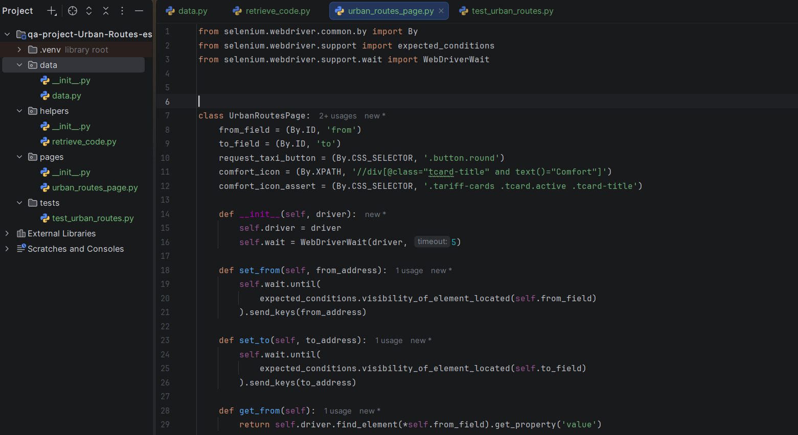

Pruebas automatizadas para la App Urban Routes
Automaticé la validación funcional de Urban Routes con PyCharm y Selenium, cubriendo el flujo completo de reserva de taxi.
- 🧭 Localizadores y métodos: definí selectores y funciones para cubrir la configuración de dirección y selección de tarifa.
- ⌨️ Entrada de datos automatizada: validé campos de formulario — número de teléfono, tarjeta de pago y mensajes en cajas de texto.
- 🚕 Flujo end-to-end: automaticé la interacción final mediante clic automático para solicitar el taxi.